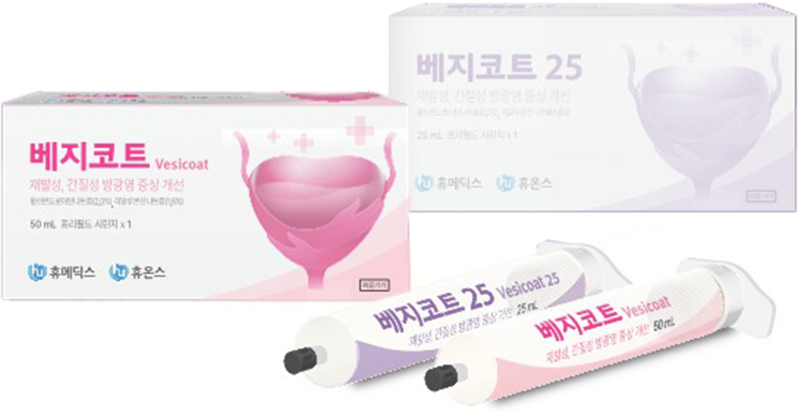

나를 위한
방광염 클리닉
여성은 생식기 구조상 세균이 방광까지
더 쉽게 도달이 가능하기에 방광염에 걸리기 쉽습니다
하부 요로 감염 중에 방광 내에 국한된 염증을 방광염이라고 합니다
원인에 따라 세균, 간질성, 결핵, 호산구 방광염으로
나뉘지만 대개 세균 방광염이며,
증세가 나타나는 시기에 따라
급성 방광염, 과민성 방광염으로 나뉠 수 있습니다
대부분 장내 존재하는 대장균에 의해서 발생하며 일부에서는
피부에서 사는 세균에 의해서 나타나기도 하며,
요도를 통해 균이 들어가서 나타나며 여성에게서 빈번하게 발생합니다
방광염의 주요 증상
-
회음부나 소변이
나오는 부위
아픈 경우 -
소변을 볼 때
아래가 찌릿하며
아픈 경우 -
소변색이 탁하고
냄새가 나는 경우 -
아랫배가
아픈 경우 -
소변이 자주
급한 경우 -
소변량이
적은 경우
방광염 치료
단순 방광염의 경우, 3-7일 정도로 완치가 되며,
치료 후에도
방광에 영구 장애가 남거나
후유증이 있는 경우도 거의 없습니다.
심한 통증이 있거나 만성 재발성 방광염의 경우
보조적 치료를 하거나 7일 이상의
치료를 하기도 합니다.
종종 항생제를 한두 번 먹고
증상이 좋아졌다고 본인이 약을
중단하는 경우가 있습니다.
그러나
1회 요법은 완치율이 감소하고 재발률이 증가하며,
재발 시 내성균이 생겨서 치료가 어려워질 수 있습니다.
방광염의 치료에서 가장 주의할 점은 반드시 치료 전에
요 검사를 하여야 하며,
치료 후에도 요검사를 해서
완전히 치료가 되었는지 확인해야 합니다.
방광염 발병률이 높은 이유
-
1
몸의 구조상 남성의 요도는 긴 데 비해
여성의 요도는 짧습니다. -
2
항문과 요도 입구가 가까워 장내 세균이
요도로 침범할 가능성이 높습니다. -
3
성생활, 요도 자극, 임신 등이 원인이 되어
세균이 쉽게 요도를 통해 방광에 침입합니다.
방광염 검사
나를위한 산부인과 방광염검사 5분이면 OK
나를위한 산부인과에서는 기다림없이 결과를
당일 바로 확인할 수 있는 요화학분석기를 사용합니다.
-
문진 및 신체검사
하복부를 누르면 아픈 것을 제외하면 특징적인 진찰소견은 없으나
간혹 여성의 질 입구, 요도에 이상이 있거나
대하가 심한 경우가 있으므로
진찰을 받는 것이 좋습니다.
반복적으로 방광염이 발생하는 경우는
반드시 정밀한 검진을 통해 치료를 받아야 합니다. -
소변검사 / 소변 균 배양 검사
소변 검사에서 백혈구의 유무를 확인 해야 하며,
반복적으로 방광염에
걸리는 분은
반드시 소변 균 배양 검사를 함께 시행하여야 합니다. -
방사선 검사
열이 나거나 옆구리가 아픈 경우, 적절한 치료에도 반응이 늦거나
재발하는 경우, 증상은 소실되었는데 계속 소변에서 염증 세포가
나타나는 경우 방사선 검사가 필요합니다. -
내시경 검사
혈뇨가 심했던 경우 치료가 종료되면
시행하는 것을 원칙으로 합니다.
만성 간질성방광염이란?
어렵거나
소변이 자주 마려운 증상과 같은
배뇨 증상이 적어도 하나 이상 동반하면서
방광과 관련된 만성 골반 통증, 압박감
또는 불편감이 있는 질환입니다.
방광 기능이 약해지거나 방광 안쪽
점막이 파괴돼 발생합니다.
반복적인 방광염으로 치료받는 경험이 있거나
빈뇨, 절박뇨 등 배뇨증상을 동반한
골반, 요도, 질 등 골반 기저부 및
하복부 통증이 한 달 이상 지속하면
간질성 방광염을 의심해야 합니다.
만성 간질성방광염 증상
-
통증 부위가 아랫배,
허리, 요도, 질 같은
골반 기저부에 한정 -
소변이 마려울 때
아랫배, 골반,
허리에
압박감과
통증이 느껴짐 -
소변을 볼 때나
보고 난
후에는
통증이 없음 -
한 번의 소변량이
기존의 3~40%로
감소하고 자주 봄
만성 간질성방광염 치료

"히알루론산과 황산콘드로이틴"의 혼합제제인
방광 조직 수복 재
방광 조직 표면에 부착되어 염증으로
손상된 방광 점막 조직(GAG, 글리 코사 미노 글리칸)
층을 보충해 통증을 완화시켜주고, 소변, 노폐물 등
외부 자극 물질로부터 방광 벽을 보호하는 효과
만성 간질성방광염
치료방법
카테터라 불리는 작은 튜브를 이용해 요도로
베지코트의 용액을
방광 내 직접 주입하여
방광까지 도달시킴
방광 내부에 직접적으로 약을 주입하여 점막을 치유하는
방법으로
경구 약물보다 만족도가 높음
방광염 예방법
잔뇨감, 참을 수 없는 배뇨 느낌 등
다양하고 복합적인 증상이 나타나는 방광염은
치료뿐만이 아니라 재발되지 않도록 예방하는 것도 중요합니다.
-
항문, 성기 주변을 청결히 합니다.
-
물을 많이 마십니다.
-
소변은 참지 않는 것이 좋습니다.
-
생리대는 자주 교체합니다.
-
통풍이 잘 되는 옷을 착용합니다.